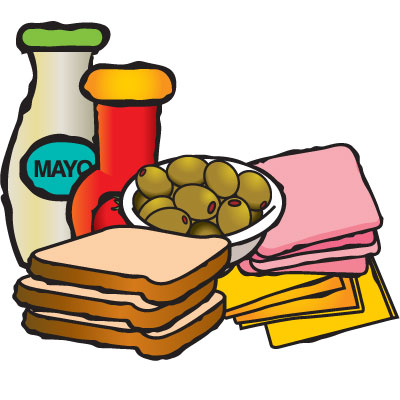
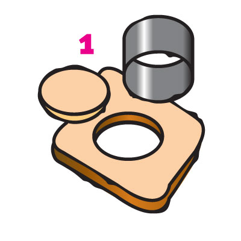
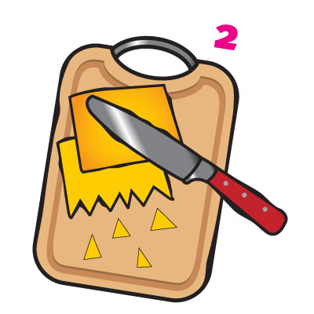
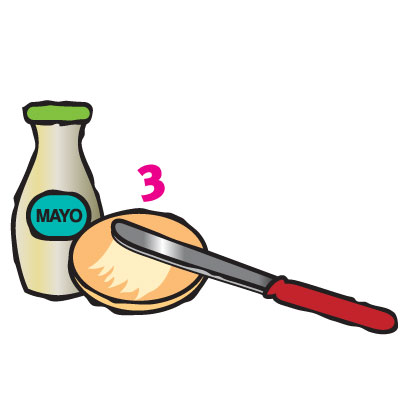
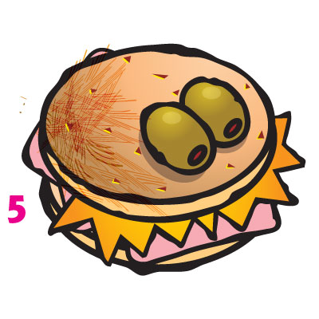

| Ingredientes | Imagen |
| Varias rebanadas de pan de caja Varias rebanadas de queso amarillo Jamón al gusto Aceitunas Mayonesa o aderezo |  |
|---|---|
| Cómo se prepara | |
| 1 Corta las rebanadas de pan de caja con un vaso o cortador de galletas para que tengan forma redonda |  |
| 2. Parte con un cuchillo con ayuda de un adulto las rebanadas de queso formando picos que parezcan dientes filosos. |  |
| 3. Unta las rebanadas de pan con mayonesa, mantequilla o tu aderezo favorito |  |
| 4. Rellena tu sándwich con jamón y queso, procurando que los picos queden fuera del pan. |  |
| 5. Clava las aceitunas en el sándwich con ayuda de un palillo, de modo que parezcan los ojos del monstruo. |  |